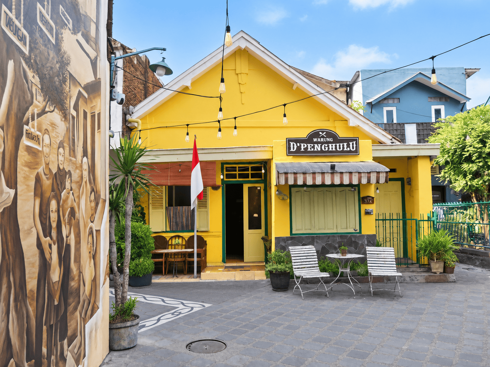

BANGUNAN BERSEJARAH · MALANG
Rumah 1870

Sepenggal cerita
Menurut keterangan penghuni, Rumah Jengki Kayutangan dibangun sekitar tahun 1960-an dan hingga kini berfungsi sebagai tempat tinggal sekaligus kafe bagi wisatawan di kawasan Kayutangan Heritage. Rumah ini memiliki ciri khas arsitektur Jengki yang mewakili arsitektur Indonesia pasca kemerdekaan, antara lain atap pelana yang tidak bertemu dan tanpa bubungan, dengan gewel di antaranya yang dimanfaatkan sebagai ventilasi. Ventilasi diperkuat oleh krepyak dan rooster atau karawang yang sekaligus menjadi elemen estetis. Beranda beratap datar dengan tiang besi berbentuk V berfungsi sebagai portico, ruang penerima, sekaligus peneduh dan penyejuk interior. Ciri lainnya adalah kusen dan jendela yang tidak simetris.